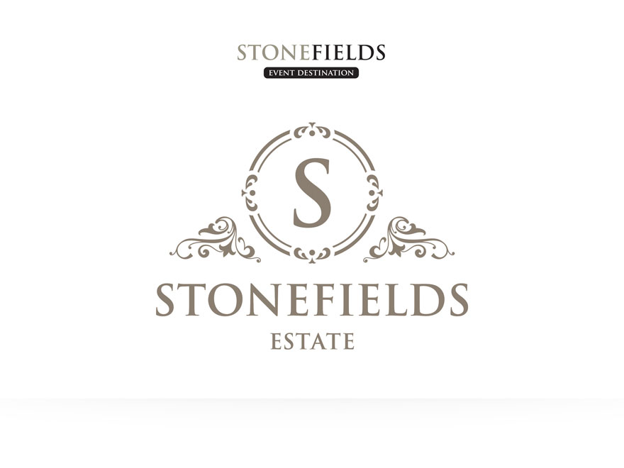

<!--Work Preview section-->
<section class="offset section">
			
	<!--Inner content-->
	<div class="innerContent">

		<!--Container-->
		<div class="container clearfix">
			<div class="fifteen columns">
				<div class="work-preview-close"></div>
			</div>
		</div>
		<!--Container-->
		
		<!--Container-->
		<div class="container clearfix">

			<div class="fifteen columns">

				<!--slider-->
				<div class="work-preview-slider clearfix flexslider" >

					<div>

						<ul class="slides">
							
							<li>
								
							</li>
							
							<li>
								
							</li>

						</ul>

					</div>
					
				</div>
				<!--slider-->

			</div>


			<div class="fifteen columns work-info">
				<h1 class="title">Stonefields Estate Rebrand<br><span>Branding</span></h1>
				<p>Voted as one of <em>Canada’s Top 20 Loveliest Wedding Venues</em> by <em>Wedding Bells</em> magazine, Stonefields is a luxury location for any event providing excellent service and gourmet cuisine.</p>

				<p>In 2018, Stonefields made the decision to rebrand, changing their name from <em>Stonefields Event Destination</em> to <em>Stonefields Estate</em> after having grown exponentially, building additions on their beautiful outdoor property – most recently, a gorgeous rustic barn perfect for weddings.</p>

				<p>The owners' vision of the brand was to transform the Stonefields logo into an elegant monogram that reflected the charm of their property. By using the curls and swirls of a floral graphic previously created for the brand, I formed the two side shapes creating a sense of stability and comfort while keeping with the well-known and established brand identity. The line weights of the middle circles were chosen to mimic the diverse thicknesses in the floral motif and the letterforms of the Stonefields Estate font. Lastly, it was decided to use only the taupe brand colour for the logo to create a classic and polished piece.</p>

				<!--<div class="social-icons">
					<ul>
						<li><i class="step fi-heart"></i><span>100</span></li>
						<li><i class="step fi-social-facebook"></i><span>620</span></li>
						<li><i class="step fi-social-twitter"></i><span>450</span></li>
						<li><i class="step fi-social-pinterest"></i><span>100</span></li>
					</ul>
				</div>-->

			</div>


		</div>
		<!--Container-->
	
	</div>
	<!--Inner content-->

	
</section>